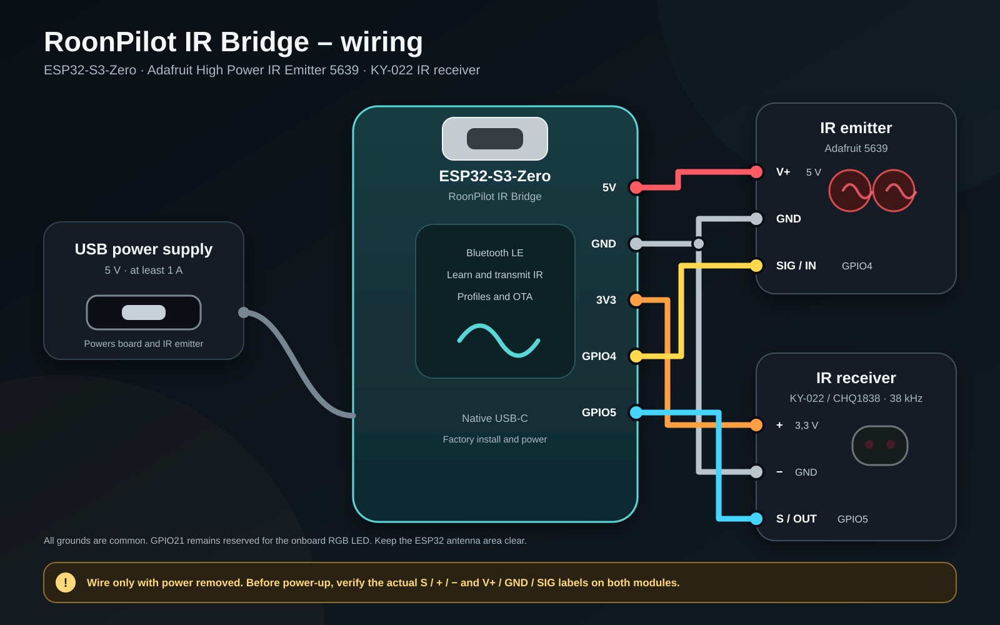

Setup and operation
Complete Bridge guide
This guide starts with an unpowered bare board and ends with learned infrared profiles, per-zone routing, backup and signed online updates managed by RoonPilot.
1. What the Bridge does
RoonPilot IR Bridge is an optional ESP32-S3 companion for equipment that Roon cannot control directly. RoonPilot remains the user interface; the Bridge receives authenticated volume, mute and power actions and emits the learned commands of the original infrared remote.
Routing is selected per Roon zone. One zone can use native Roon volume, a second can control a DAC through infrared, and another can deliberately have volume control disabled. Disabling Bridge & Bluetooth turns off Bridge scanning, Bluetooth and all Bridge background work after RoonPilot restarts.
2. Hardware and safe wiring
The validated prototype uses an ESP32-S3-Zero-compatible board with 4 MB flash and 2 MB PSRAM, an AZ-Delivery KY-022/CHQ1838 receiver and USB power. The intended final output stage is the Adafruit High Power IR Emitter 5639; the small AZ-Delivery KY-005 transmitter is suitable for short-range bench work.
S, +, −, V+, GND and SIG labels on your delivered modules. Compatible KY-022 boards do not always expose their pins in the same physical order.
| Bridge connection | Destination | Purpose |
|---|---|---|
| 5 V | Adafruit 5639 V+ | High-power emitter supply from USB, not from the 3.3 V regulator |
| 3V3 | AZ prototype transmitter VCC | Use only for the current low-power AZ transmitter |
| GPIO4 | Transmitter SIG / S | 3.3 V IR modulation signal |
| 3V3 | KY-022 + | Keeps its digital output inside the ESP32 input domain |
| GPIO5 | KY-022 S / OUT | Demodulated IR receive signal |
| GND | Both modules | Mandatory common ground |
The Adafruit board contains its own transistor driver and accepts 3–5 V power and a 3–5 V logic input. At 5 V its two LEDs can draw roughly 400 mA in total while pulsing, so use a stable 5 V / 1 A or better USB supply and never drive the LEDs directly from a GPIO. Keep its bursts short and keep the ESP32 ceramic antenna clear of modules, wiring and metal.
3. First Factory installation
- Complete and inspect the wiring with USB disconnected. For the very first board test, disconnect the IR modules if their pin labels are not yet certain.
- Open the Bridge browser installer in a current desktop Chrome or Edge. Firefox, Safari, iPhone and iPad cannot use the required Web Serial interface.
- Connect the Bridge board directly by USB. Close Arduino Serial Monitor, ESP-IDF Monitor and every other program using the port.
- Select the ESP32-S3 native USB serial/JTAG device. On macOS this normally appears as
cu.usbmodem…; on Windows it is commonly shown as USB JTAG/serial debug unit (COM…). - Accept both safety confirmations and start the installer. Keep USB connected until installation and restart have completed.
After a successful Factory installation, the Bridge creates a new random identity in the form RPB-XXXX-XXX and permits its first encrypted pairing. The RGB LED slowly pulses blue while pairing is open.
4. Pair the Bridge with RoonPilot
- Open RoonPilot’s local web interface and select Bridge.
- Enable Bridge & Bluetooth, save and allow RoonPilot to restart. When disabled, no Bridge Bluetooth stack is started.
- Select Scan for Bridges. Compare the displayed
RPB-…identity with the Bridge you intend to control. - Select that identity and confirm pairing in RoonPilot. Do not pair an unknown nearby device.
- Wait for Encrypted and bonded, the installed Bridge version and Ready. Two short blue LED flashes confirm success; the LED then switches off.
- Run Test connection before learning profiles.
No accessible BOOT button is required for everyday pairing. If one side later loses its bond, power-cycle the Bridge three times within 15 seconds. The Bridge removes only its bond and opens pairing for five minutes; its identity and IR profiles remain intact.
5. Optional Wi-Fi fallback
BLE remains the preferred link. If the Bridge must sit in another room, enable Allow Wi-Fi fallback while BLE is connected and bonded. RoonPilot then transfers its current 2.4 GHz credentials and a fresh 256-bit application key once through the encrypted BLE connection.
- Enable the switch and confirm provisioning.
- Wait for Connected and verified, the Bridge IP address and signal level.
- Use Test Wi-Fi path to force an authenticated Wi-Fi command even while BLE is available.
Commands use AES-256-GCM authentication and replay protection. A retry cannot silently produce a second IR action. Failed credentials are not retained, BLE remains the recovery path, and disabling fallback prevents the Bridge Wi-Fi radio from starting after reboot. RoonPilot and Bridge must be on the same local network without client isolation.
6. Create and learn an IR profile
- Create a clearly named profile such as
RME ADI-2 DAC — Living room. Keep the usual 38 kHz carrier and 33% duty setting unless the equipment requires something else. - Choose Learn beside Volume up. The Bridge LED pulses orange while it waits.
- Aim the original remote at the KY-022 and press the requested key once, briefly and cleanly.
- Repeat the same press when requested. The Bridge accepts only matching captures.
- Two short green flashes mean that the command was analysed and stored; two red flashes mean timeout, mismatch or failure.
- Use Test and verify the real device before continuing with Volume down, Mute, Power on and Power off.
Known NEC and Extended NEC signals retain protocol and repeat information; unknown signals remain available as lossless raw timing. Duty is the on-time percentage of each carrier cycle—not press duration and not the number of repeats. The 33% default means that a 38 kHz LED carrier is on for roughly 8.7 µs of each 26.3 µs cycle.
7. Route each zone
Open Zone Management and choose one volume path for every visible zone:
- Roon / endpoint volume sends the endpoint’s native absolute or dB volume command.
- External IR Bridge sends Volume up/down from the selected profile.
- Disabled deliberately discards volume actions.
Set the encoder step count separately for every zone. 2 Steps means two complete learned IR button presses for each RoonPilot detent. It does not mean one artificially held command. On the validated RME profile, two physical 0.5 dB increments therefore produce exactly one 1.0 dB RoonPilot detent.
Mute and Power can also be enabled per zone. Play/Pause, Previous and Next remain native Roon actions. Because incremental infrared does not report an absolute value, the display shows a relative + / − action counter instead of inventing a volume number.
Music transport still goes through Roon and WiiM. Only volume, mute and power are routed to the Bridge, so the RME performs the analogue/hardware level change itself. This preserves the DAC’s Auto Ref Level behaviour and avoids substituting Roon digital attenuation for the RME volume control.
8. Back up and restore profiles
Use Download JSON backup after every successfully tested learning session. The file contains profile names, carrier and duty values, revisions, learned pulse sequences with checksums, zone assignments, per-zone step counts and enabled Mute/Power controls.
The backup deliberately excludes Wi-Fi credentials, the Wi-Fi transport key, BLE bond keys and all other secrets. After a Factory reset or board replacement, pair first, import the backup and test every restored action. Wi-Fi fallback must be provisioned again so a new application key is bound to the new Bridge.
9. Signed online updates
After the first Factory installation, normal Bridge updates are managed from RoonPilot’s Bridge → Bridge firmware update card—no USB access and no local BIN selection are normally required.
- When the Bridge feature is enabled, RoonPilot may check the HTTPS manifest after startup and at most once every 24 hours. Update checking and the once-per-day device notice are separate settings.
- The page shows installed and available Bridge versions. A visible status-bar notice links directly to the update card; the device notice is dismissible and waits until important interaction has finished.
- Installation never starts automatically. Select Download and install and confirm it explicitly.
- RoonPilot validates channel, project, board, protocol range, required controller version, size, SHA-256, ESP32-S3 target and embedded version before transfer.
- The image is transferred over the currently available encrypted transport. The Bridge independently checks order, size, SHA-256 and its RSA-3072 signature before activating the inactive A/B partition.
- Success is reported only after the Bridge reconnects and reports the requested version. ESP-IDF rollback remains available if the new application cannot confirm its start.
If Bridge & Bluetooth is disabled, RoonPilot performs no Bridge scan, update request, web notice or display notice. The normal RoonPilot firmware update channel remains independent.
10. Troubleshooting
No serial device in the installer
Use a data-capable cable, close serial monitors, connect directly without a hub, then hold BOOT while inserting USB and release it after the port appears.
Bridge is not found
Confirm Bridge & Bluetooth is enabled and saved. For a previously paired Bridge, use the three-power-cycle recovery and scan during the five-minute blue pairing window.
Learning times out
Check KY-022 pin labels, use 3.3 V, reduce sunlight, move the original remote closer and use two clean presses of equal length.
Wrong volume increment
First verify one learned command with Test. Then check the zone’s independent step count; do not compensate for a bad recording with a larger number.
Wi-Fi fallback does not connect
Provision while BLE is bonded, use 2.4 GHz, keep both devices on the same LAN and disable AP/client isolation. BLE must remain available after a failed first test.
An update is not offered
Check that the Bridge feature and Bridge update check are enabled, then use the manual check on the update card. An older unsigned test build may first require a wired migration.
Ready for the bench